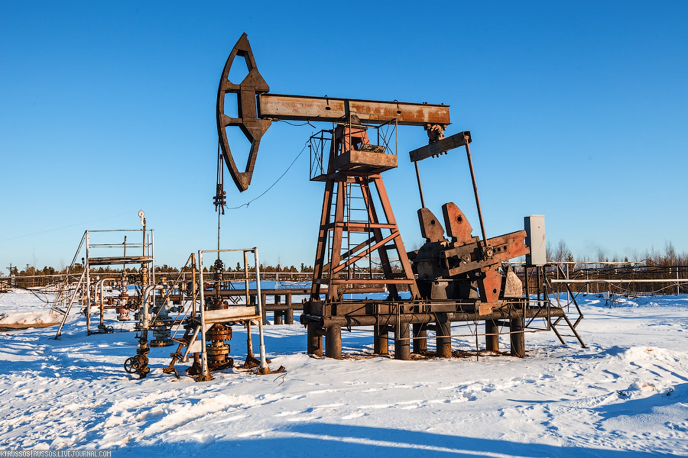

Разделы

Раздел: Классификация
Классификация скважин нефти основана на различных критериях, таких как геологические характеристики, производительность, метод добычи и др. Вот некоторые из наиболее распространенных способов классификации скважин нефти:
-
По геологическим характеристикам:
- Нефтяные скважины (добывают нефть).
- Газовые скважины (добывают природный газ).
- Конденсатные скважины (добывают газовый конденсат).
- Комплексные скважины (добывают смесь нефти и газа).
-
По способу добычи:
- Промысловые скважины (добываются с использованием методов физического воздействия, таких как закачка воды, газа или пара).
- Нагнетательные скважины (добываются путем нагнетания вещества в скважину для увеличения давления и улучшения потока нефти).
- Фонтанно-насосные скважины (добываются с использованием насосов для подъема нефти на поверхность).
- Продукционные скважины (добываются без применения физических методов, например, за счет давления пласта).
-
По типу скважины:
- Верхнепластовые скважины (размещаются над нефтяным пластом).
- Среднепластовые скважины (размещаются на уровне нефтяного пласта).
- Нижнепластовые скважины (размещаются ниже уровня нефтяного пласта).
- Горизонтальные скважины (добываются путем бурения горизонтального отрезка в нефтяном пласте).
-
По производительности:
- Перспективные скважины (имеют высокую производительность и экономическую ценность).
- Некоммерческие скважины (имеют низкую производительность или недостаточную для экономической добычи нефти).
